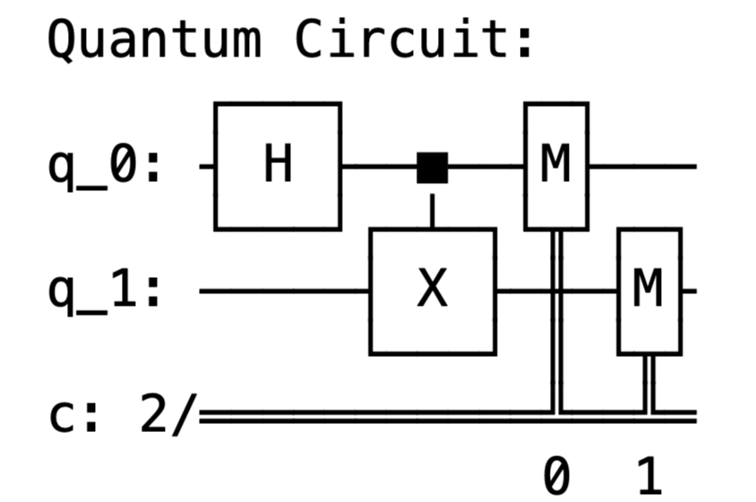

Overview
This project begins an independent hands-on approach to learning the basics of quantum computation and information and the Qiskit SDK. Here I create a simple quantum circuit to simulate the creation of a Bell-state or EPR pair.
- We begin with two qubits in the ground state, |00⟩
- A Hadamard gate is applied to the first qubit, placing it in an equal superposition between states.
- A CNOT gate then acts on both qubits. This flips the state of the second qubit if and only if the state of the first qubit is |1⟩.
- We then end with one of the simplest examples of quantum entanglement, a superposition between the states |00⟩ and |11⟩ of the two qubits.

This is a simple introduction into building quantum circuits, which will be explored further in following projects. Please view the repository for this project below.